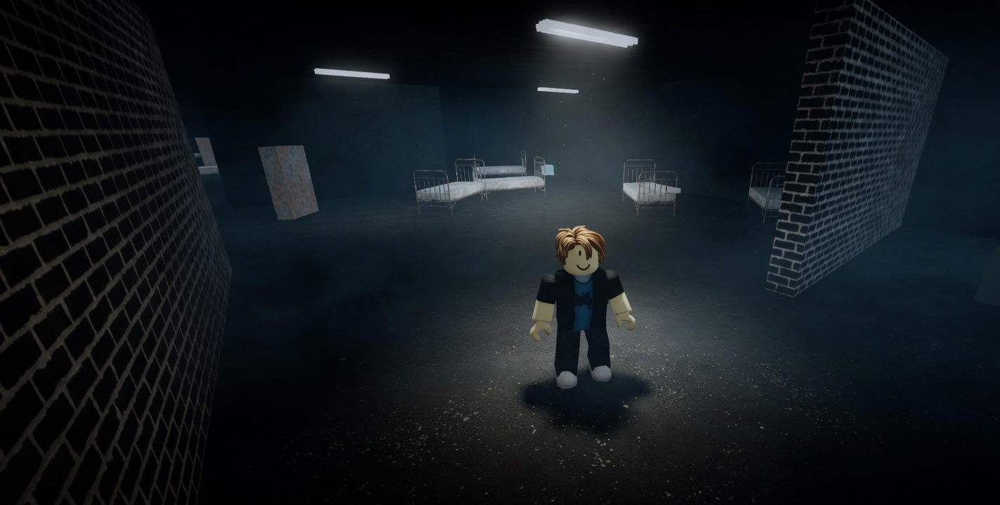
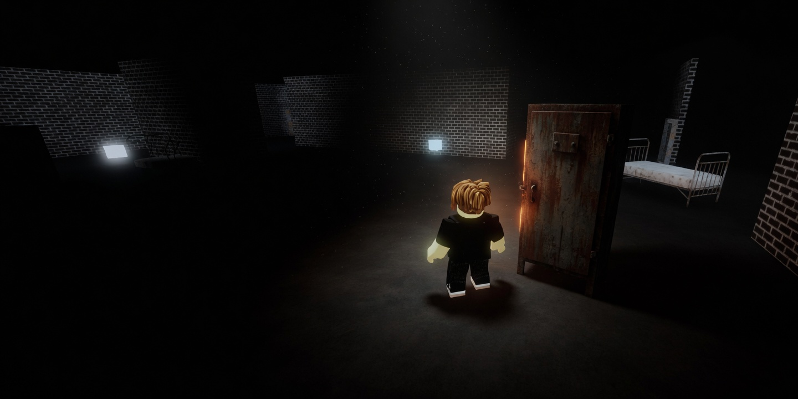
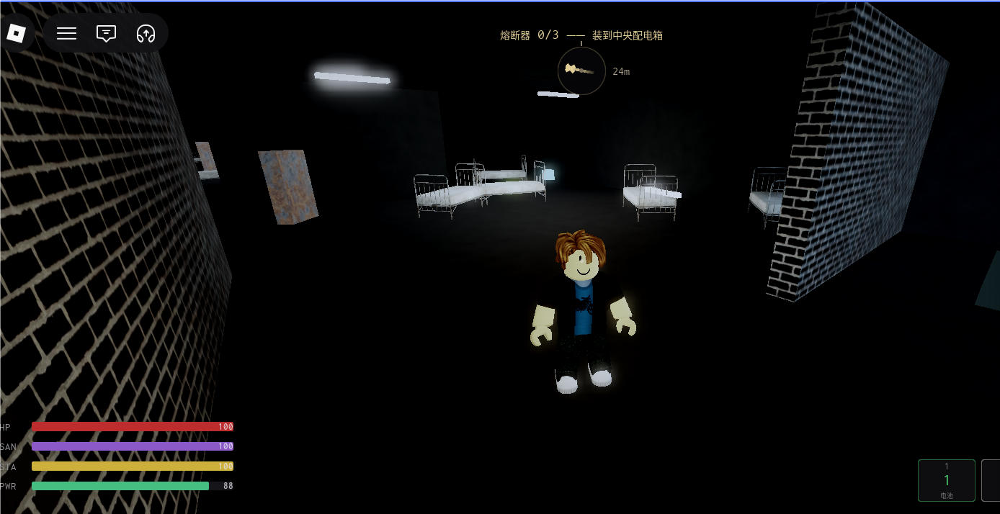
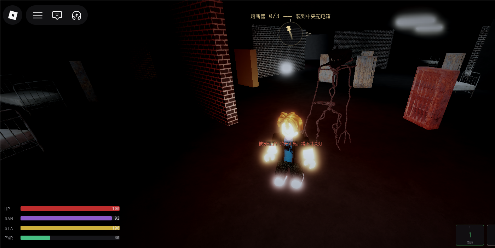
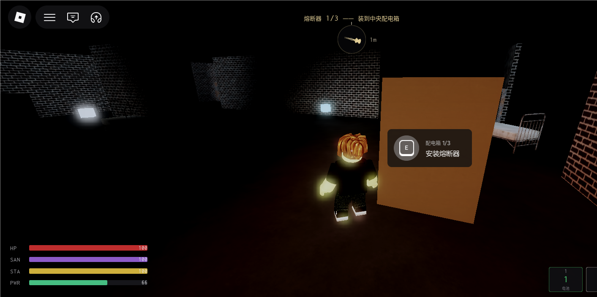

恐惧要可管理。开关灯、蹲伏、步速直接改变自己的可见性；每一次遭遇都有玩家能按下的结束键。
资源是光、理智与体力三条互相咬合的线。开手电能看见路，也把侦测距离拉到 1.8 倍；关灯则隐蔽，理智持续下降。玩家冲刺永远快过怪物追击，压力来自体力条——若怪物更快，追逐会退化成运气判定。
正面对抗是负期望。钢管打出硬直需要的站桩时间里，挨到的伤害超过生命上限。近战的唯一用途是打断一次抓取后逃跑。怪物不会死，血量归零表示气势被打断，随后满血归来。
- 类型
- 第三人称恐怖生存
- 单局
- 约 5 分钟
- 目标
- 3 枚熔断器
- 状态
- 可玩
核心循环
- 安全屋出发楼层本局生成，确认通路
- 寻找熔断器管理光、理智、体力，规避巡逻
- 安装三次中央配电箱，每次站定 2.5 秒
- 东南角撤离供电恢复，传送至海边结算
设计要点
视听侦测可读
视觉需连续看到 0.6 秒才判定发现，被瞥见一眼仍有机会缩回掩体。听觉半径等于当前噪音，蹲行归零。
脱战有成本
蹲伏加关灯、脱离视线且距离足够，维持 1.5 秒后丢失目标。蹲伏极慢，关灯期间理智持续下降，何时停下是一次判断。
单一难度旋钮
电池投放量决定单局有多少时间必须摸黑。调整投放即可整体平移难度，不必改动其他参数。
展示图


实机截图



展示图由实机截图重绘，去掉界面。点开可看原图。